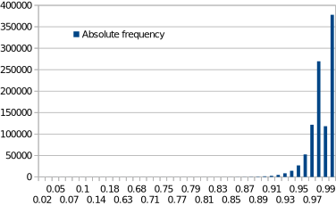

Approximating Jaccard Distance Between Documents
Goal
In this exercises we will implement an algorithm which speeds up the measurement of the Jaccard similarity between documents.
Prerequisites
In principle, the content presented during the lectures suffices to implement this task. However, it is certainly beneficial to study the corresponding text in chapter 3 of the Mining of Massive Datasets book. You can also watch the videos of the coursera course related to LSH (in week 2).
Task
The task consists of four parts. First, you need to devise a way to convert the documents to sets. Then you need to be able to calculate the exact Jaccard distance between two of these sets. Next, you will use locality-sensitive hashing to calculate an approximation of the distance. Finally, you need to evaluate the quality of the approximation.
For this task, the teacher has cleaned a dataset which contains paragraphs from books from Project Gutenberg (download). On each line of the file, you will find the words from the paragraph, with the most common words (stopwords) removed. Each line of the file has to be be taken as a document for this exercise,
This task is performed either individually or as a pair. If you want to work as a pair, take a different partner as for last task. You are free to work using the programming language you want.
Part I
Read the dataset into memory and apply one transformation on each document. This can be done as follows:
- Make a list which will contain a set for each document
- Make a set (
allTerms) which will contain all elements of these sets - Until all lines are read
- Read a line (there is one document on each line)
- Apply one of the following (you can apply multiple if you want and have time left):
- Split the line (on space) and apply stemming on each word, add all words to a set.
- Check Porter stemming implementations for different programming languages.
- Split the line, add the terms to a set in such a way that duplicates are preserved.
- If the words are
[A, A, B], create the set{A1,A2,B1} - Optional: you can also use techniques like TF.IDF to determine the frequency in the final set.
- If the words are
- Split the line, add all 2-grams to a set.
- If the words are
[A, B, C, D, E, F, A, B, C], then the set will be{AB, BC, CD, DE, EF, FA}
- If the words are
- Do not split the line. Add all 5 shingles to a set.
- If the line is
abcd efg, then the set will be{"abcd ", "bcd e", "cd ef", "d efg" }
- If the line is
- Split the line (on space) and apply stemming on each word, add all words to a set.
- Add the set from the previous step to the list.
- Add all strings from the set from step 2 to the
allTermsset.
- Convert the
allTermsset to a list.
Part II
Implement a method or function which calculates the Jaccard distance between two sets of Strings. To do this, you first compute the size of the union and intersection, then you apply the formula for Jaccard distance.
Now, you should be able to calculate the distance between two of the read documents.
Part III
First, you need to implement a min-hash algorithm, and then use it to approximate the distance between two documents. You could implement the somewhat optimized algorithm from the course book (section 3.3.5).
Second, to calculate the approximate distance, we start from what was shown in class.
And hence
When applying min-hash n times (using different permutations), we can approximate the distance by
Note that n is a parameter to your approximation. A column vector containing the min-hash evaluations for a document is its signature vector.
When these vectors are placed into a matrix, it is called the signature matrix of the documents.
Hence, to approximate the distance with n min-hash functions, you need to calculate the signature vector for both documents and determine in how many places they agree.
Part IV
To evaluate the quality of the approximation, we will observe how much it deviates from the real value. Concretely, we will calculate the average absolute error for 100 random distance calculations.
Work as follows:
- For each distance calculation(100):
- Select D1 and D2 at random from the documents
- Calculate the real distance between D1 and D2
- For
nin [5, 10, 20, 40, 80]:- Calculate the approximate distance.
Finally, for each n, calculate the average error as follows:
Create a chart in which you plot the error in function of n.
Note
Normally, you would pre-calculate the signatures for all documents and not keep the documents themselves in memory (normal documents will be much longer than the paragraphs, for instance whole web pages). After this has been done you can very fast answer queries for the distance between two documents. In general, it is a bad idea, or even impossible, to pre-calculate all the distance between documents, since these distances need O(N^2) storage space. For instance, for 2 million documents, and 4 bytes per distance, this would be 7451 Gb. I we instead use signatures of length 100, using 4 bytes for the min-hash outcome, we need 0.745 Gb of space.
Hints
- Use small part of the data during development. If you notice that your implementation is slow, you can use a reduced set (min 2000) of documents for the evaluation.
- For the programming language, you might just want to choose the one you are most familiar with. Depending on the chosen language the teacher will be able to help more (or less) with language specific issues.
- Randomized algorithms are difficult to debug. Make it somehow possible by fixing the seed of the random number generator. At least each run will be the same.
- People using Java should check the Guava Libraries, in particular classes for splitting strings and working with sets.
- The operation for permuting lists is most often called shuffle. For instance, in Java Collections.shuffle(List<?> list, Random rnd) or in Python random.shuffle(x[, random]). Not that both of these permute the list in-place (no copy is made).
- Most of the distances will be close to 1. More concrete, when performing a million random samples the frequency of a given distance occurring looks like this: